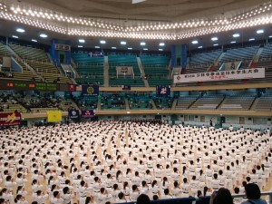

京都大学体育会少林寺拳法部
写真
大会（2018年度）
京都府大会
集合写真です。今年は全ての組演武が同じ組でおこなわれたため大混戦でしたが、見事入賞者も出ました！
関西学生大会
演武の１コマ
団演も出場しました(大阪大学さんとは同点でした。七帝戦は勝つぞ！)
今年は運用法が特に好調で団体３位でした！演武も多数が本戦出場できました。
山城ブロック交流大会
今年は全国大会と日付がかぶってしまい二回生一組と一回生のみの出場となり、残念ながら入賞者は出ませんでした。写真はあと1点で入賞だった宮本川畑ペア。
2018年少林寺拳法全国大会in群馬
今年は団体演武の部で参加となりました。結果こそ予選落ちではありましたが得られたものはあったはずです。
全日本学生大会
日本武道館にて、全日本学生大会です。毎年のテーマは雲外蒼天、雲は苦労や乗り越えるべきものの暗示ですが会場にひしめく拳士を雲に見立てられそうな光景です。乗り越えるべきものとしてあながち間違ってもいない気もします。
立合評価法では男子中量級の部で小畑さんが2位、女子軽量級の部でらなさんが6位に入賞されました。
演武では入賞することはできませんでしたが、これを糧として頑張っていきたいです。
関西学生新人大会
 演武では本選に多くが出場し、前田さん佑妃さんペアが入賞しました。
演武では本選に多くが出場し、前田さん佑妃さんペアが入賞しました。
 立合評価法でもベスト１６入りが多く、岩崎さんが重量級で3位に入賞しました。
立合評価法でもベスト１６入りが多く、岩崎さんが重量級で3位に入賞しました。
京都学生大会
 2018年最後の大会です。１回生も含め多くが入賞し京都大学として３位に入賞し本年の締めとして十分な結果を残しました。
2018年最後の大会です。１回生も含め多くが入賞し京都大学として３位に入賞し本年の締めとして十分な結果を残しました。